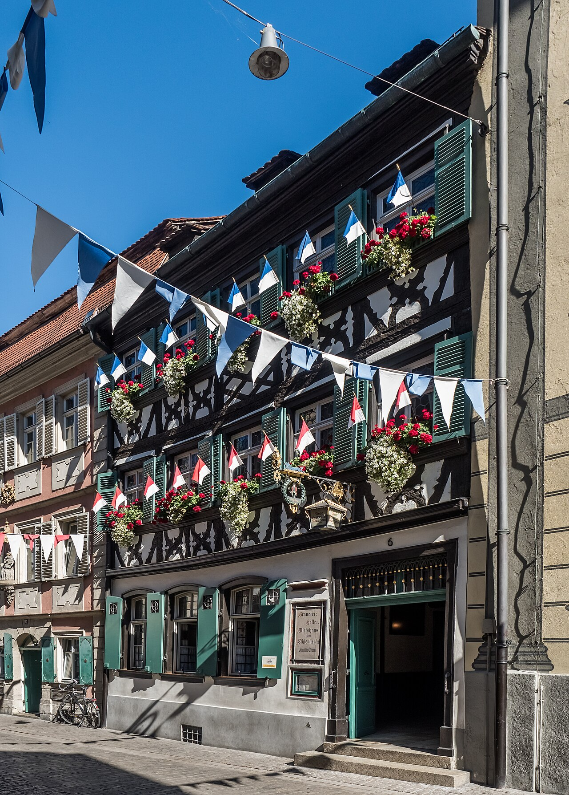

01 · Dominikanerstraße
Schlenkerla
Bamberg’s best-known smoked-beer tavern, at Dominikanerstraße 6 in the old town. The official English chronicle traces the house itself through sales of the “Blue Lion” between 1405 and 1615, then destruction in the Thirty Years’ War; it says reports before 1678 are scarce, “but in that year the brewery was founded.” 1405 is the house history, not a brewery founding date. The official trade name is Heller-Bräu; the Schlenkerla nickname is dated by the brewery to Andreas Graser in 1875. The Trum family has run it since 1960. This is one of the two city breweries that Visit Bamberg names as producers of Bamberg’s famous Rauchbier.
Tip: Reservations: +49 951 56050, from the official site. About an eight-minute walk from Spezial. Check schlenkerla.de for current hours and which smoked beers are on.
Directions: Google Maps · Apple Maps
Photo: ermell, CC BY-SA 4.0, via Wikimedia Commons
Sources: Schlenkerla chronicle (official, English) · Schlenkerla tavern (official) · Visit Bamberg: Breweries
See Schlenkerla on our Unique Pubs deck →
Find a stay near Schlenkerla →